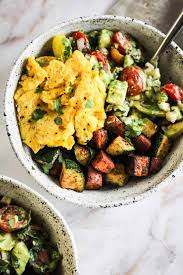

Potato Bowl

Another favorite meal of mine is the potato bowl. It is quite healthy
and it also tasty.
Ingredients
- 1 Potato
- 100 grams of egg whites
- 1 lb of chicken
- 1 cup of cheese of choice
- 5 brussel sprouts
The ingredients are just a baseline but you can mix in match meats, cheese, and veggies. These are just my go-to.
Recipe
- Dice up potatoes, and toss in an air fryer for 20 minutes at 400°F
- Preheat oven to 400°F
- Cube and season chicken
- Cut brussel sprouts in half and put in oven once oven is preheated for 20 minutes
- Cook chicken in a pan until done
- In the same pan, throw in the potatoes and egg whites, and cook until egg whites are done
- Take concoction that was in the pan and put into bowl. Put the brussel sprouts on top
- Grub